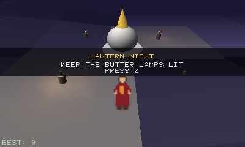
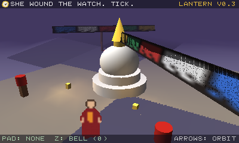
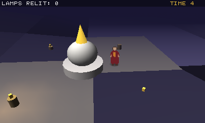
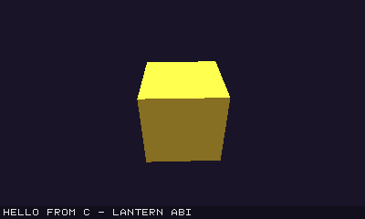
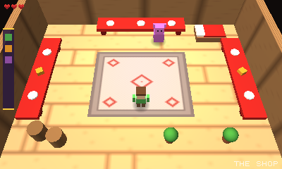
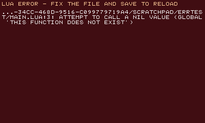

A renderer we own outright
No OpenGL, no Vulkan, no Metal. Transform, clipping, perspective-correct rasterization, depth, bilinear sampling — all computed in the engine's own C++. Deterministic output on every machine.
lantern is a tiny 2D/3D game engine with one rule: everything renders at 400×240 — by its own software rasterizer. No GPU API, no borrowed pipeline: every pixel is computed by the engine. The constraints are the aesthetic.

Nothing in lantern imitates the old look with shaders. The look emerges from real limits, the same way it did on hardware.
No OpenGL, no Vulkan, no Metal. Transform, clipping, perspective-correct rasterization, depth, bilinear sampling — all computed in the engine's own C++. Deterministic output on every machine.
Gouraud per-vertex lighting: one directional light plus four point lights, exactly the hardware budget of the 3DS GPU. Linear fog, blob shadows, keyframe mesh animation, alpha-tested transparency.
Batched sprites, atlas sub-rects for tilemaps, rotation/tint/flip, a built-in 8×8 font. Everything lands on the same 400×240 frame, HUD always on top.
Primitives (cube, plane, sphere, cylinder, cone), custom vertex
buffers with per-vertex color, and Wavefront OBJ loading
with flat-normal fallback for that faceted low-poly shading.
Camera-facing sprites inside the 3D scene — the A Link Between Worlds trick for putting 2D characters in a 3D diorama. Fogged, alpha-tested, one call.
A 48 kHz 16-channel WAV mixer with looping. Binary-safe save data. Keyboard and gamepad merged into one namespace — held and edge-triggered — plus rumble.
Statically typed, Lua-small, ~2.1k lines, zero deps. Optionals,
flat records, type-checked lt.*, frame-boundary GC.
Store packages are wick-only.
Blog & docs →
Save main.lua while the engine runs and it hot-reloads.
A Lua error shows an in-engine error screen with file:line — fix,
save, keep playing. Screenshot any game headlessly for CI.
No build step, no project files, no editor lock-in.
Define update(dt) and draw() — the engine calls
them at 60 fps. Prefer C? The identical API ships as a C ABI you link
against.
-- a complete lantern game
local sphere = lt.sphere(14)
function draw()
lt.clear(0.1, 0.1, 0.2)
lt.fog(6, 25, 0.1, 0.1, 0.2)
lt.camera(0, 2, 5, 0, 0, 0, 55)
lt.point_light(0, 2, 1, 2, 4, 1, 0.7, 0.3)
lt.draw(sphere, 0, 0, 0, 0, lt.time(), 0,
1, 1, 1, 0.9, 0.5, 0.4)
lt.print("HELLO", 4, 4, 1, 1, 1, 1)
end
Four sample games are in the box, from a commented starter template to a complete arcade game where the engine's four point lights are the core mechanic.




lantern is the third engine tier of the famemu project — after its NES and SNES engines comes the 3DS generation. Our own game, KORA, is being built on it; the engine you get is the engine we ship on. Get started in the developer docs.